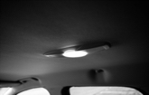

Why should I buy a Knowsmoke Certified Smoke-Free vehicle?
Tobacco smoke residue clings to interior surfaces

Thirdhand smoke is the combination of chemicals from cigarettes that remain on surfaces long after smoking has occurred. These residues can be ingested, inhaled, or absorbed through the skin, potentially increasing the risk of certain cancers and other serious diseases.
For more information on thirdhand smoke and its associated risks,
please visit
https://www.knowsmoke.com/
Customer Signature
Dealer Signature